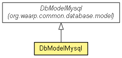

org.waarp.openr66.database.model
Class DbModelMysql
java.lang.Object
 org.waarp.common.database.model.DbModelAbstract
org.waarp.common.database.model.DbModelMysql
org.waarp.openr66.database.model.DbModelMysql
org.waarp.common.database.model.DbModelAbstract
org.waarp.common.database.model.DbModelMysql
org.waarp.openr66.database.model.DbModelMysql
- All Implemented Interfaces:
- org.waarp.common.database.model.DbModel
public class DbModelMysql
- extends org.waarp.common.database.model.DbModelMysql

MySQL Database Model implementation
- Author:
- Frederic Bregier
| Nested classes/interfaces inherited from class org.waarp.common.database.model.DbModelMysql |
org.waarp.common.database.model.DbModelMysql.DBType |
| Fields inherited from class org.waarp.common.database.model.DbModelMysql |
mysqlConnectionPoolDataSource, pool, type |
|
Method Summary |
void |
createTables(org.waarp.common.database.DbSession session)
|
boolean |
needUpgradeDb(org.waarp.common.database.DbSession session,
String version,
boolean tryFix)
|
long |
nextSequence(org.waarp.common.database.DbSession dbSession)
|
void |
resetSequence(org.waarp.common.database.DbSession session,
long newvalue)
|
boolean |
upgradeDb(org.waarp.common.database.DbSession session,
String version)
|
| Methods inherited from class org.waarp.common.database.model.DbModelMysql |
currentNumberOfPooledConnections, getDbConnection, getDbType, limitRequest, releaseResources, validConnectionString |
| Methods inherited from class org.waarp.common.database.model.DbModelAbstract |
closeInternalConnection, validConnection, validConnectionSelect |
| Methods inherited from class java.lang.Object |
clone, equals, finalize, getClass, hashCode, notify, notifyAll, toString, wait, wait, wait |
DbModelMysql
public DbModelMysql(String dbserver,
String dbuser,
String dbpasswd)
throws org.waarp.common.database.exception.WaarpDatabaseNoConnectionException
- Create the object and initialize if necessary the driver
- Parameters:
dbserver - dbuser - dbpasswd -
- Throws:
org.waarp.common.database.exception.WaarpDatabaseNoConnectionException
createTables
public void createTables(org.waarp.common.database.DbSession session)
throws org.waarp.common.database.exception.WaarpDatabaseNoConnectionException
- Specified by:
createTables in interface org.waarp.common.database.model.DbModel- Overrides:
createTables in class org.waarp.common.database.model.DbModelMysql
- Throws:
org.waarp.common.database.exception.WaarpDatabaseNoConnectionException
upgradeDb
public boolean upgradeDb(org.waarp.common.database.DbSession session,
String version)
throws org.waarp.common.database.exception.WaarpDatabaseNoConnectionException
- Throws:
org.waarp.common.database.exception.WaarpDatabaseNoConnectionException
resetSequence
public void resetSequence(org.waarp.common.database.DbSession session,
long newvalue)
throws org.waarp.common.database.exception.WaarpDatabaseNoConnectionException
- Specified by:
resetSequence in interface org.waarp.common.database.model.DbModel- Overrides:
resetSequence in class org.waarp.common.database.model.DbModelMysql
- Throws:
org.waarp.common.database.exception.WaarpDatabaseNoConnectionException
nextSequence
public long nextSequence(org.waarp.common.database.DbSession dbSession)
throws org.waarp.common.database.exception.WaarpDatabaseNoConnectionException,
org.waarp.common.database.exception.WaarpDatabaseSqlException,
org.waarp.common.database.exception.WaarpDatabaseNoDataException
- Specified by:
nextSequence in interface org.waarp.common.database.model.DbModel- Overrides:
nextSequence in class org.waarp.common.database.model.DbModelMysql
- Throws:
org.waarp.common.database.exception.WaarpDatabaseNoConnectionException
org.waarp.common.database.exception.WaarpDatabaseSqlException
org.waarp.common.database.exception.WaarpDatabaseNoDataException
needUpgradeDb
public boolean needUpgradeDb(org.waarp.common.database.DbSession session,
String version,
boolean tryFix)
throws org.waarp.common.database.exception.WaarpDatabaseNoConnectionException
- Throws:
org.waarp.common.database.exception.WaarpDatabaseNoConnectionException
Copyright © 2009-2013 Waarp. All Rights Reserved.